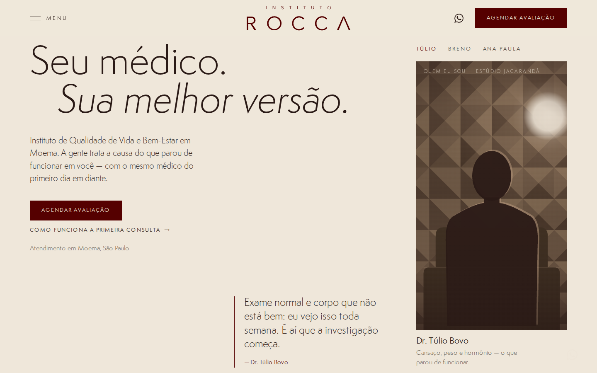
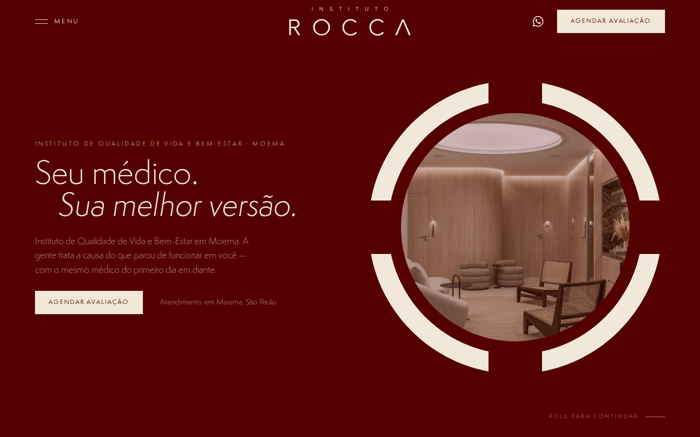
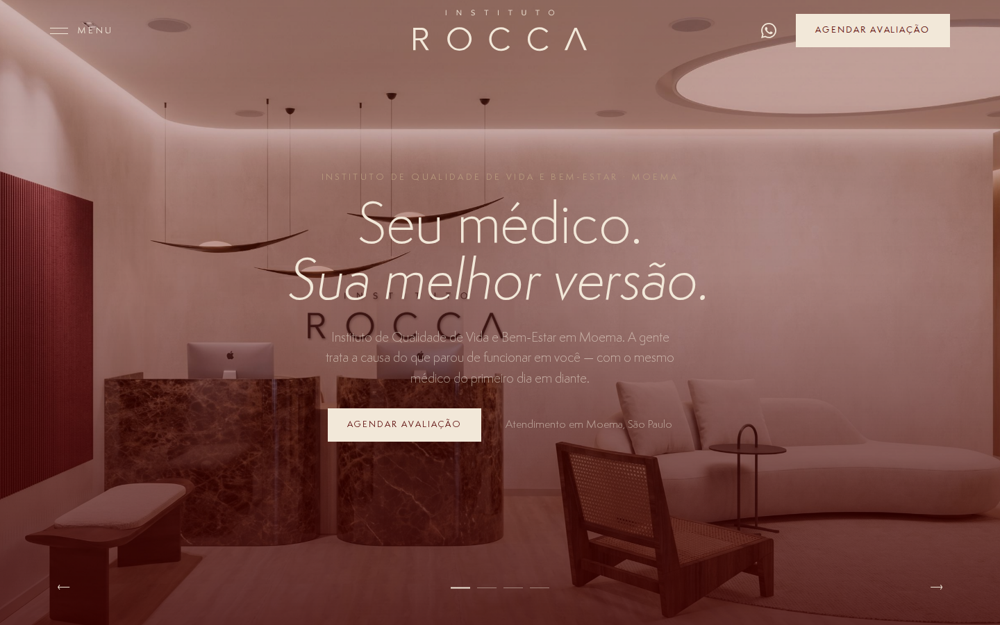
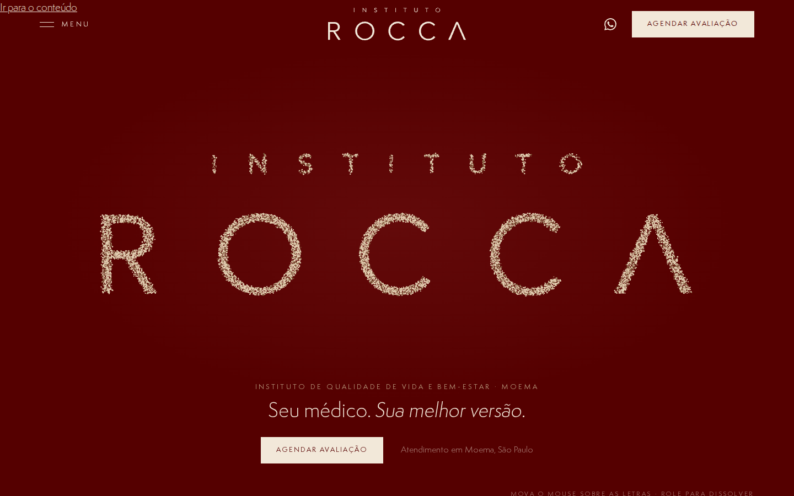

Conceito 01
Matéria
Partículas three.js em creme e areia sobre bordô: o que se dispersou volta ao lugar.
Abrir →
Conceito 02
Chegada
A entrada da clínica em tela cheia: madeira, mármore e luz quente, como capa de revista de arquitetura.
Abrir →
Conceito 03
Presença
O filme institucional no hero, como a Direção de Marca previu; a casa com gente.
Abrir →
Conceito 04
Conversa
Claro e tipográfico: o médico fala em vídeo vertical e as perguntas da semana conduzem a página.
Abrir →
Conceito 05
Símbolo
A geometria do símbolo em movimento: anel, máscara e frentes em scroll horizontal.
Abrir →
Conceito 06
Slides
Fotográfico e editorial: slides de tela cheia e tiles escuros, no ritmo da referência Seven.
Abrir →
Conceito 07 · só o hero
Letras
O wordmark INSTITUTO ROCCA escrito com partículas: converge, reage ao mouse e se dissolve ao rolar.
Abrir →